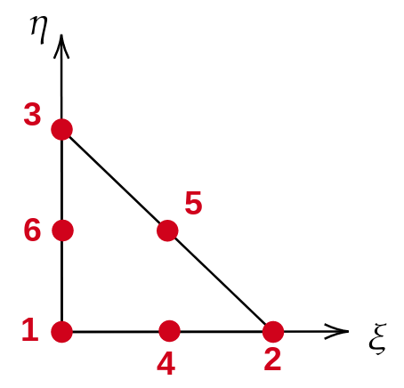

pysdic.geometry.QuadraticTriangleMesh3D#
QuadraticTriangleMesh3D class#
- class pysdic.geometry.QuadraticTriangleMesh3D(vertices, connectivity, *, vertices_properties=None, elements_properties=None, internal_bypass=False)[source]#
Subclass of
pysdic.geometry.Mesh3Dandpysdic.geometry.SurfaceMesh3Drepresenting a 3D mesh composed of quadratic triangular elements.The vertices are represented as a
pysdic.geometry.PointCloud3Dinstance with shape (N, 3), where N is the number of vertices. Each vertex has 3 coordinates (x, y, z). The elements are represented by a numpy ndarray with shape (M, 6), where M is the number of triangular elements and each element is defined by 6 vertex indices.The coordinates of a point into the mesh can be accessed by the natural coordinates in the reference element. The natural coordinates (\(\xi, \eta\)) for a linear triangle satisfy:
\(0 <= \xi <= 1\)
\(0 <= \eta <= 1\)
\(\xi + \eta <= 1\)
We have K=6 vertices per element, and d=2 for the dimensions of the natural coordinates.
Lets \(X\) be the coordinates of a point in the mesh. The transformation from natural coordinates to global coordinates is given by:
\[X = \sum_{i=1}^{K} N_i(\xi, \eta) X_i\]where \(N_i\) are the shape functions associated with each vertex, and \(X_i\) are the coordinates of the vertices of the element.
The shape functions for a linear triangle are defined as:
\[N_1(\xi, \eta) = 2 * (1 - \xi - \eta) * (1/2 - \xi - \eta)\]\[N_2(\xi, \eta) = 2 * \xi * (\xi - 1/2)\]\[N_3(\xi, \eta) = 2 * \eta * (\eta - 1/2)\]\[N_4(\xi, \eta) = 4 * \xi * (1 - \xi - \eta)\]\[N_5(\xi, \eta) = 4 * \xi * \eta\]\[N_6(\xi, \eta) = 4 * \eta * (1 - \xi - \eta)\]
- Parameters:
vertices (PointCloud3D) – The vertices of the mesh as a PointCloud3D instance with shape (N, 3).
connectivity (numpy.ndarray) – The connectivity of the mesh as a numpy ndarray with shape (M, K), where M is the number of elements and K is the number of vertices per element.
vertices_properties (Optional[dict], optional) – A dictionary to store properties of the vertices, each property should be a numpy ndarray of shape (N, A) where N is the number of vertices and A is the number of attributes for that property, by default None.
elements_properties (Optional[dict], optional) – A dictionary to store properties of the elements, each property should be a numpy ndarray of shape (M, B) where M is the number of elements and B is the number of attributes for that property, by default None.
internal_bypass (bool, optional) – If True, internal checks are skipped for better performance, by default False.
Instantiate a QuadraticTriangleMesh3D object#
The QuadraticTriangleMesh3D is a subclass of Mesh3D and can be instantiated directly or using the methods inherited from pysdic.geometry.Mesh3D and pysdic.geometry.SurfaceMesh3D.
The QuadraticTriangleMesh3D class can also be instantiated from an pysdic.geometry.LinearTriangleMesh3D object using the class method from_lineartriangle().
Create a QuadraticTriangleMesh3D from a |
|
Convert the QuadraticTriangleMesh3D to a |
Manipulating QuadraticTriangleMesh3D objects#
To manipulate only the geometry of the mesh, access the vertices attribute (pysdic.geometry.PointCloud3D) and use its methods.
For the common methods inherited from pysdic.geometry.Mesh3D, see the class documentation of pysdic.geometry.Mesh3D for other inherited methods.
For the common methods inherited from pysdic.geometry.SurfaceMesh3D, see the class documentation of pysdic.geometry.SurfaceMesh3D for other inherited methods.
The QuadraticTriangleMesh3D class also provides the following additional methods:
Compute the shape functions at given natural coordinates. |
Visualize QuadraticTriangleMesh3D objects#
To visualize the mesh and its properties, use the methods inherited from pysdic.geometry.SurfaceMesh3D.
Examples of a simple QuadraticTriangleMesh3D workflow#
Creating a QuadraticTriangleMesh3D from vertices and connectivity:
import numpy
from pysdic.geometry import QuadraticTriangleMesh3D
vertices = numpy.array([
[0.0, 0.0, 0.0],
[0.5, 0.0, 0.0],
[1.0, 0.0, 0.0],
[0.0, 0.5, 0.0],
[0.0, 1.0, 0.0],
[0.0, 0.0, 0.5],
[0.0, 0.0, 1.0],
[0.5, 0.5, 0.0],
[0.5, 0.0, 0.5],
[0.0, 0.5, 0.5],
])
connectivity = numpy.array([
[0, 2, 4, 1, 7, 3],
[0, 2, 6, 1, 8, 5],
[0, 4, 6, 3, 9, 5],
[2, 4, 6, 7, 9, 8],
])
mesh = QuadraticTriangleMesh3D(
vertices=vertices,
connectivity=connectivity,
)
Visualizing the mesh:
mesh.visualize()
Set a displacement property on the vertices and visualize it:
displacement = numpy.array([
[0.0, 0.0, 0.0],
[0.1, 0.0, 0.0],
[0.0, 0.1, 0.0],
[0.05, 0.0, 0.0],
[0.0, 0.05, 0.0],
[0.0, 0.0, 0.1],
[0.0, 0.0, 0.05],
[0.05, 0.05, 0.0],
[0.05, 0.0, 0.05],
[0.0, 0.05, 0.05],
])
mesh.set_vertices_property("displacement", displacement)
mesh.visualize_vertices_property("displacement")